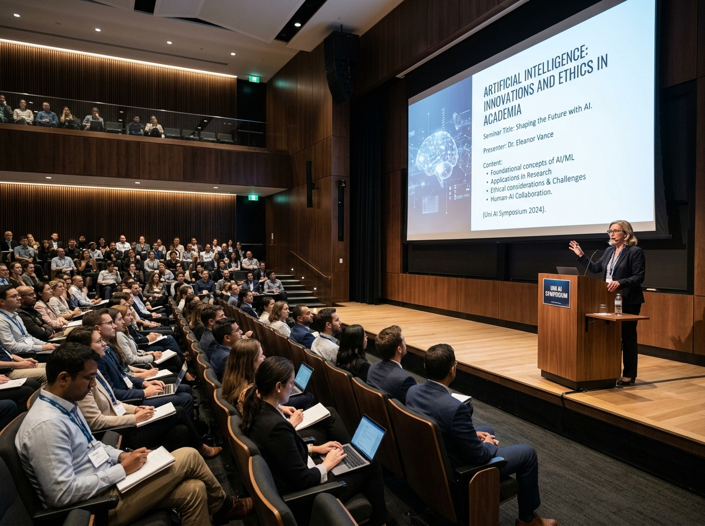
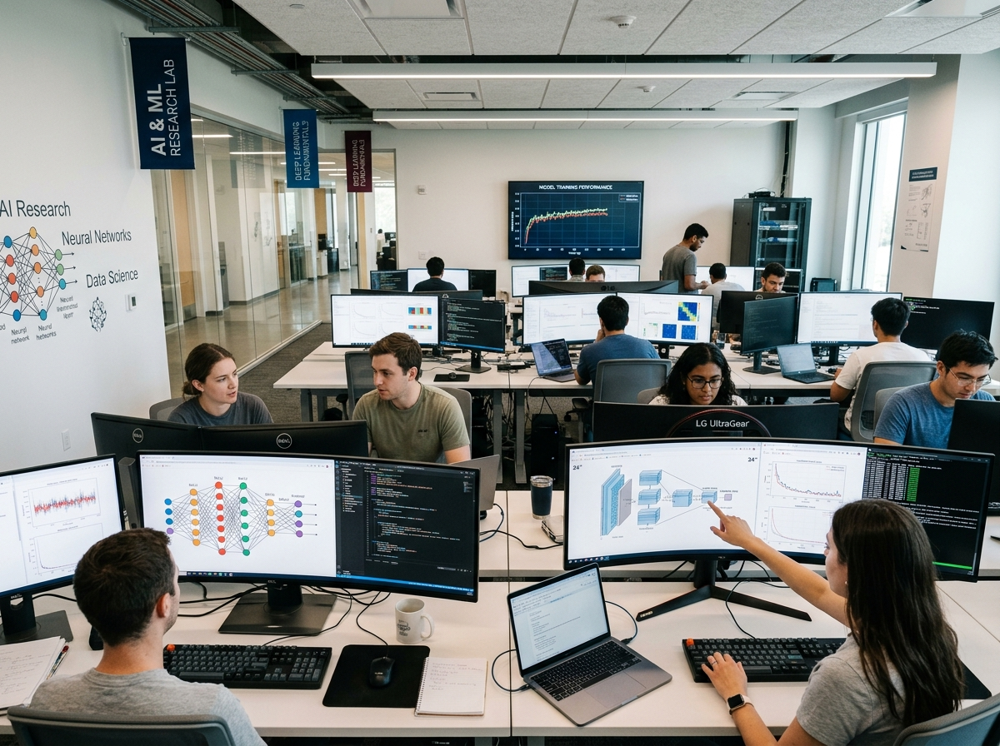
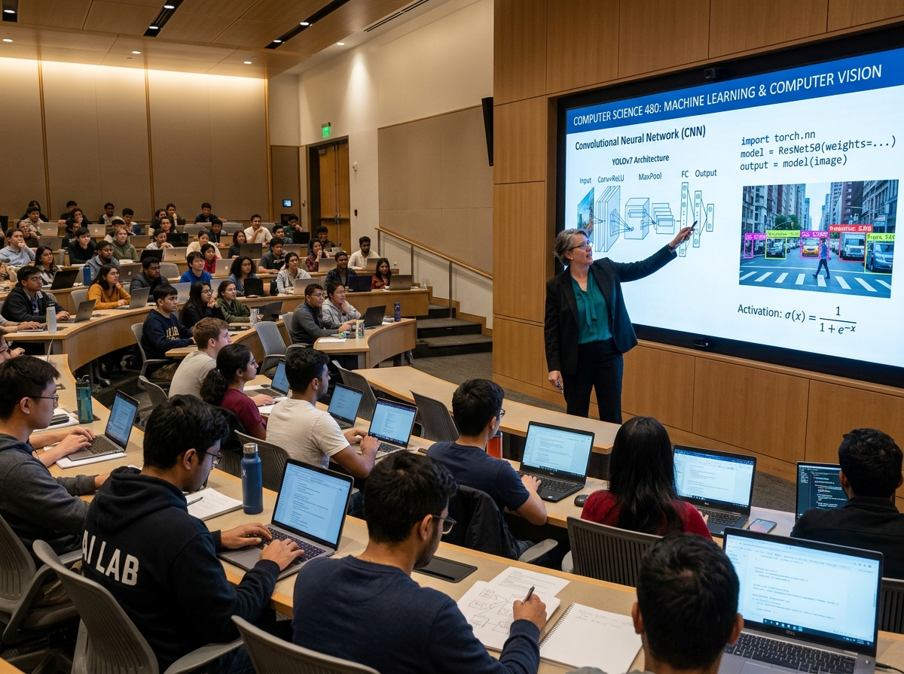

Hi, I am
Bibhuti Kumbhakar
Dedicated academician and AI researcher pushing the boundaries of Deep Learning, Computer Vision, and Medical AI to solve real-world complex problems.
About Me
Empowering Innovation Through AI & Academic Mentorship
I am an Assistant Professor in the Department of Computer Science & Engineering at Srinath University, Jamshedpur, and a Part-Time Ph.D. Scholar at Birla Institute of Technology (BIT) Mesra. My work focuses on Artificial Intelligence, Machine Learning, Deep Learning, Computer Vision, Image Processing, and Intelligent Systems. I am passionate about conducting impactful research, mentoring students, publishing scientific work, and developing intelligent solutions for real-world problems.
Beyond teaching and research, I actively contribute to institutional compliance, NAAC accreditation activities across multiple criteria, IQAC academic quality assurance, and regulatory processes for AISHE, AICTE, and university affiliation requirements.
Quick Information Summary
Education Timeline
Doctor of Philosophy (Ph.D.)
Birla Institute of Technology (BIT) Mesra
Department of Computer Science & Engineering
Part-Time Ph.D. ScholarMaster of Computer Applications (MCA)
Bharati Vidyapeeth Institute of Management & Entrepreneurship Development (IMED), Pune
Bachelor of Science (Information Technology)
Karim City College, Jamshedpur (Kolhan University)
Intermediate (10+2)
A. W. Inter College, Rajnagar
Matriculation (10th)
S. S. V. M. Higher Secondary School, Seraikella
Teaching & Academic Experience
Assistant Professor
Srinath University, Jamshedpur
Key Responsibilities & Leadership:
- Teaching undergraduate and postgraduate students in Computer Science & Engineering.
- Mentoring final-year students in major project design, practical implementation, and technical documentation.
- Curriculum development and syllabus modernizations for modern AI/ML modules.
- Workshop organization on artificial intelligence, deep learning, and hands-on Python tools.
- Academic mentoring and student career development guidance.
- Conducting high-impact Artificial Intelligence & Medical Vision research.
Assistant Professor
Netaji Subhas University, Jamshedpur
Key Responsibilities & Institutional Contributions:
- Delivered theory and practical sessions in Java, DBMS, Web Development, Computer Networks, and core CS subjects.
- Designed practical-oriented curriculum, assignments, lab exercises, and assessment materials aligned with academic & industry standards.
- Mentored 20+ student projects involving web applications, database systems, and full-stack development.
- Contributed to NAAC accreditation activities across multiple criteria including report compilation, data collection, and departmental coordination.
- Assisted in institutional compliance and documentation processes related to AISHE, AICTE, HEI approvals, and university affiliations.
- Active Member of IQAC (Internal Quality Assurance Cell) academic quality assurance and affiliation coordination.
Research Interests
Artificial Intelligence
Intelligent agent design, expert systems, heuristic search, automated reasoning, and ethical AI architectures.
Machine Learning
Supervised and unsupervised models, ensemble learning, feature extraction, and predictive analytics.
Deep Learning
Convolutional networks, recurrent architectures, Transformers, and deep generative models.
Computer Vision
Object recognition, image segmentation, pattern extraction, optical flow, and visual tracking.
Image Processing
Spatial filter enhancement, wavelets, morphological operations, and medical imaging modalities.
Medical AI
Ocular-based disease detection, neurological condition diagnosis, and automated medical screening.
Bioinformatics
Computational biology algorithms, gene expression analysis, and protein sequence prediction.
Cloud Computing
Distributed serverless computing, cloud virtualization, container orchestration, and resource scheduling.
Data Science
Big data processing, statistical modeling, data mining pipelines, and business intelligence.
Smart Healthcare
IoT sensor monitoring for patient health, remote diagnostics, and predictive clinical triage.
Network Security
AI-driven intrusion detection systems, cryptographic protocol optimization, and threat analytics.
Intelligent Systems
Autonomous multi-agent coordination, real-time crisis prediction, and fault-tolerant computing.
Smart Cities
AI traffic congestion prediction, smart waste management, and intelligent municipal infrastructure.
Green AI
Energy-efficient deep learning architectures, lightweight edge models, and sustainable computing.
Research Publications
The Eye as a "Window to the Brain": A Comprehensive Review of Machine Learning for Ocular-Based Neurological Disease Detection
DOI: 10.12732/ijam.v38i12s.1519
A comprehensive systematic survey reviewing state-of-the-art machine learning algorithms and computer vision techniques for detecting systemic neurological pathologies via retinal imaging and ocular biomarker analytics.
Detection of Neurological Diseases Using Machine Learning
This research presents a novel non-invasive predictive pipeline utilizing optimized machine learning classifiers to accurately detect early-stage neurological disorders through physiological markers.
An AI Driven Predictive Framework for Crisis Management and Organizational Resilience Using Multi Source Real Time Data
URI: https://www.jisem-journal.com/index.php/journal/article/view/13948
Proposes a real-time multi-source data ingestion framework combining deep learning anomaly detection and sentiment analytics to enhance organizational crisis response speed and structural resilience.
Projects & Applications
AI-Based Smart Waste Management
IoT-connected computer vision garbage classification and automated route optimization framework for municipal urban waste management.
AI Intrusion Detection System
Deep learning anomaly detector trained on network packet flows to identify zero-day cyber threats in real time.
Medical AI - Neurological Disease Detection
Non-invasive diagnostic suite evaluating ocular micro-vascular patterns to detect Alzheimer's and Parkinson's early.
Journal Management System
Full-stack automated double-blind peer-review processing portal with integrated DOI Crossref metadata generator.
Cloud Security using AI
Predictive micro-segmentation and access control policy manager operating within multi-cloud Docker/Kubernetes clusters.
Traffic Prediction System
Spatial-temporal LSTM network forecasting junction congestion levels using live camera feeds and historical sensor data.
Computer Vision Applications
Custom Vision models for automated agricultural crop disease identification and industrial quality control.
Deep Learning Frameworks
Modular Python PyTorch toolkit simplifying transfer learning, model pruning, and hyperparameter tuning for scholars.
Crisis Prediction Framework
Multi-stream NLP & time-series architecture synthesizing social, environmental, and financial risk signals.
Das Enterprises - Product Showcase Portal
A commercial web application developed for a steel & iron product manufacturing company to showcase products, services, and client inquiries.
BookBank - Full-Stack Book Exchange Platform
Developed an end-to-end web portal enabling users to exchange books featuring secure user authentication, inventory tracking, and database query optimization.
E-Farming - Farmer Marketplace Portal
Web-based online portal assisting local agricultural farmers in directly listing crops and connecting with licensed grain dealers for fair pricing.
Teaching & Courses
Java & Core Programming
Object-Oriented Architecture & JDBCDatabase Management Systems
Relational Design, SQL & Query OptimizationWeb Development & Frameworks
HTML, CSS, Bootstrap, PHP & Spring BootComputer Networks
OSI Layers, TCP/IP & Routing ProtocolsOperating Systems
Process Scheduling, Memory & ConcurrencyArtificial Intelligence
Search & Knowledge RepresentationMachine Learning
Algorithms & Neural NetworksData Structures
Trees, Graphs & Dynamic ArraysPython Programming
OOP & Scientific ComputingSoftware Engineering
Agile, SDLC & System ModelingTechnical Expertise
Programming & Web Tech
Frameworks & Databases
AI, Deep Learning & Vision
Tools & Academic Governance
Research Philosophy
"I believe Artificial Intelligence should solve meaningful real-world challenges through ethical, interpretable, and impactful research. My work aims to bridge theory with practical implementation while fostering innovation, collaboration, and lifelong learning. Through interdisciplinary research and academic excellence, I aspire to contribute solutions that advance healthcare, intelligent systems, education, and society."
Key Achievements & Honors
Winner - IMED GEMS Web Development Competition (2022)
Awarded First Place in the annual GEMS Web Development Competition at Bharati Vidyapeeth Institute of Management & Entrepreneurship Development (IMED), Pune.
Winner - IMED GEMS Web Development Competition (2021)
Secured Champion Title in the Web Development Challenge at Bharati Vidyapeeth IMED, Pune, demonstrating full-stack engineering proficiency.
Published Research Papers
Authored multiple high-impact research articles in Scopus-indexed international journals covering Medical AI, Ocular Biometrics, and Crisis Management Frameworks.
Assistant Professor Appointment
Serving as Assistant Professor at Srinath University, Jamshedpur, guiding undergraduate and postgraduate students in computer science excellence.
Ph.D. Scholar Enrolment
Enrolled as a Part-Time Ph.D. Scholar at the prestigious Birla Institute of Technology (BIT) Mesra in Computer Science & Engineering.
NAAC & IQAC Academic Governance Leadership
Actively contributed to NAAC accreditation reports, IQAC quality assurance, and institutional compliance (AICTE / AISHE / HEI).
Photo Gallery



Academic Testimonials
Research Blog
The Future of Ocular AI: Early Detection of Neurological Disorders
How retinal image processing and convolutional neural networks are transforming non-invasive neuro diagnostics.
Building Resilient Real-Time Machine Learning Pipelines
Best practices for streaming sensor data ingestion, model monitoring, and online anomaly detection.
How to Write Impactful Computer Science Papers
A scholar's guide to structuring research abstracts, presenting metrics, and selecting target indexed journals.
Contact & Communication
Reach Out Directly
Feel free to connect for academic research collaborations, workshop invitations, paper reviews, or student project guidance.